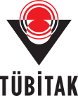
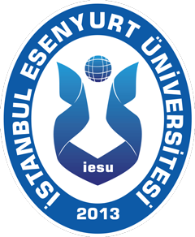

Proje Yürütücüsü
Aziz ÇAYIROĞLU
Kahraman Dostum proje yürütücüsü.
Proje Ekibi
Kahraman Dostum, çocukların ve gençlerin akran zorbalığını tanımasına ve güvenli destek yollarını öğrenmesine yardımcı olmak amacıyla hazırlanan bir farkındalık projesidir.
Proje Yürütücüsü
Kahraman Dostum proje yürütücüsü.
Proje Araştırmacısı
Proje araştırmacısı.
Proje Danışmanı
Proje danışmanı.
Kahraman Dostum, araştırma desteği ve öğrenci kongresindeki derecesiyle öne çıkıyor.

TÜBİTAK 2209-AÜniversite Öğrencileri Araştırma Projeleri Destekleme Programı kapsamında desteklenen proje.

I. Ulusal Bilişim Teknolojileri Öğrenci Kongresiİstanbul Esenyurt Üniversitesi I. Ulusal Bilişim Teknolojileri Öğrenci Kongresi 3.lük Derecesi
Proje hakkında sorularınız ve görüşleriniz için bize yazabilirsiniz.